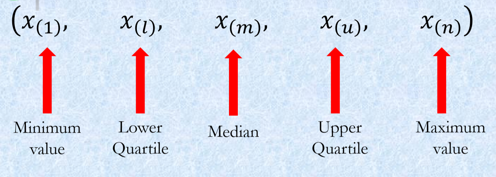
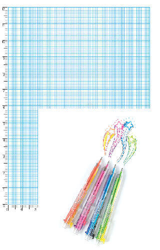

Exploratory Data Analysis (EDA) is one of the key preliminary steps any data scientist who deals with data needs to perform before doing any analysis.
EDA is performed to understand your data, to unearth the underlying structure, to assess the quality of your data by means of summary statistics and visual representations, to discover the main attributes and characteristics of each variable in your data, to discover the relationships between your variables in your data and of course to gain insights before performing any complex modelling.
EDA is not done because it has to be done or because it is one of the requirements of a data science project, it is done for scientific reasoning, not housekeeping and to discover what you don’t yet know you should model. Of course, as in any project, you should start your thinking process around the hypotheses you might already have, the questions you want to answer, however, EDA is an open-ended, iterative process. It needs to be reproducible. Do not save output!
In this course, we will only use R and teach in R. We assume you know R or learned R in the STA5075Z - Statistical Computing in R course. I need to mention that R is just a tool, and there are several other tools to use such as Python. EDA is not about learning R, or making plots in R etc. — it’s about thinking statistically with data to help modelling and decision-making, regardless of the tool.
Also, be forewarned that you need to know basic statistics to be able to follow this course and if you are rusty in your first year statistics knowledge, then please read STA1000 book to refreshen your background. The aim of this course and these notes is to cover some of the more popular methods for exploring multivariate data. The perspective that we will take when looking at these techniques will be to use the minimum amount of mathematics necessary for a solid understanding of the techniques and their interpretation. However, this does not mean “no mathematics”! Over the past twenty or so years, modern statistical software packages have made it possible to run all of the techniques that we’ll cover in this course with a few clicks of a mouse, without knowing a single bit of mathematics and almost nothing about how the techniques themselves work. Clicking a mouse might give you results, but it is very difficult to know whether these results are reliable unless you know something about the underlying technique and what potential pitfalls exist. All statistical techniques, and particularly the multivariate ones, make some assumptions about the type and amount of data that should be collected and the aims of the researcher. If these are ignored, the results may not just be incorrect but misleading. In this case it would be better to put the output of an analysis in a rubbish bin than into a report or on a manager’s desk. To get this understanding, a certain amount of mathematics is needed.
Having said that, the focus of the course is on the practical use and interpretation of the techniques in the analysis of real-world examples. The kind of statistics and mathematics that will used includes the following topics that have been covered in previous courses:
If you are unfamiliar with any of this material, it is important to go back and revise in the first few weeks of the course.
Software - But then why R?
Both R and Python are free.
R already has all of the statistics support because it was developed by statisticians for statisticians. A lot of statistical modelling research is conducted in R.
Python was originally developed as a programming language for software development, DS tools (scikit-learn, pandas, numpy) were added on. Though the majority of DL research is done in Python, such as keras, PyTorch.
R has Tidyverse, a set of packages that makes it easy to import, manipulate, visualise and report data.
Very easy to generate dashboards using R Shiny.
It is the language I know the best, I know very little Python.
Python and R programmers get inspired from each other, ie. Python’s plotnine inspired by R’s ggplot2, and R’s rvest by Python’s BeautifulSoup.
You can also use functions written in Python with python function in R.
You can run R code from Python with rp2 package, and you can run Python code from R using reticulate. R version of DL package Keras calls Python.
Though, I do encourage you to learn Python as well. No harm in two languages.
Take away: There is no winner, you are here to learn the skills, your focus should be on skills. If you can program in R, you can do it in any other language.
Datasets and Variable Types
In this course, we will look at published MSc Data Science theses from OpenUCT (browse by department, type “Department of Statistical Sciences” in the search) and we will use publicly available datasets from various resources.
Datasets
– Zindi is the first data science competition platform in Africa.
Zindi hosts an entire data science ecosystem of scientists, engineers, academics, companies, NGOs, governments and institutions focused on solving Africa’s most pressing problems.
Kaggle competitions
Dataset types - Measurement levels
At this point it is probably worth spending a little time discussing different data types. There are two main types of data that we need to distinguish between: numerical variables, and categorical variables.
Numerical variables
Numerical variables are measurements that can be recorded on a quantitative scale where the intervals between two values on the scale have some meaning. Essentially, this means that (a) the variable contains numbers rather than words or symbols, (b) the gaps between two numbers have some actual meaning. Examples of numerical variables are height, age, and number of children.
Categorical variables are measurements of individuals in terms of groups or categories where the gap between categories have no intrinsic meaning. A typical example of a categorical variable is race, where the gap betweenblack’ and white’ has no proper interpretation, language, political affiliation, country of birth, and many other demographic variables.
It is vitally important to be able to distinguish between different data types because to a large extent these dictate what statistical techniques can be used. For example, it makes good sense to calculate the mean of a continuous variable but (as we have seen) no sense at all to calculate the mean of a categorical variable. The same idea extends to multivariate analysis. Some of the techniques we will look at work on correlation coefficients, which cannot be calculated for strictly categorical variables like race.
One further point on data types: some textbooks further divide numerical variables into ratio-scaled numerical variables and interval-scaled numerical variables; and divide categorical variables into ordinal categorical variables and nominal categorical variables. For the purposes of deciding which multivariate technique to use, this is an unnecessary detail and it is sufficient to know whether a variable is numerical or categorical. For the sake of completeness these additional terms are briefly described below. Ratio-scaled numerical variables are those that have a natural zero point (like age, height, and income). These are called “ratio-scaled” because the are not sensitive to units of measurement (if I am three times your height in meters I am also three times your height if it is measured in centimeters). This means that ratio-scaled variables have an arbitrary scale. Interval-scaled variables are still numeric but do not have a natural zero point (IQ, temperature in degrees Celcius, and most Likert-type rating scales are of this type). Interval-scaled variables therefore have an arbitrary zero point and an arbitrary scale. Ordinal categorical variables are those where the categories can be ordered even if the gaps between them cannot be interpreted (such as level of education, which can be ordered: none, primary-school, high-school, undergraduate degree, postgraduate degree). In contrast, the categories of a nominal categorical variable cannot be ordered in any meaningful way (such as race or language group). It is also common to further classify numerical variables as continuous if they can take on any intermediate value on the scale (e.g. height) or discrete if the values a variable can take on are limited in some way (e.g. number of children).

Data types
- Raw files, (.csv,.txt, .xlsx, .sav, etc.)
- Databases (mySQL, MongoDB)
- APIs (Twitter)
- and others…
Types of EDA
There are broadly two types of EDA:
Most research in the business and social sciences makes use of some kind of multivariate analysis. Research that considers only one variable at a time (a univariate analysis) can provide useful information – for example, about the average rate of inflation over time, the variability of a particular share’s return, or the relative proportion of the population that hold a certain opinion – but it is usually in the consideration of relationships between two or more variables that the most interesting and useful information is to be found. For example, what other variables are related to increases in the inflation rate or the rise in the price of a particular share? Is it interest rates? Foreign exchange rates? And what causes people to prefer one opinion over another? Is it their education level? Income? The newspaper they read? Simply put, any analysis that considers the relationship between two or more variables is a multivariate analysis.
Following Tukey’s Steps
Tukey’s EDA book provides techniques and advice about how to explore data.
The approach of EDA is detective in character, it is a search for clues. Some of the clues may be misleading, but some will lead to discoveries.
Tukey favors simplicity because simple statements are clear.
Tukey favors clear visual displays of quantitative facts.
Tukey likes precision, it is far better to be able to say some response measure is a linear function of a particular stimulus variable than to say it increases with the stimulus variable.
Tukey favors depth of analysis. It is always good to look at the residuals.
Tukey values accuracy. A misplaced decimal vs a misplaced digit.
Tukey values replicability of summary observations in situations containing aberrant observations.
EDA methods - Summary Statistics
With summary statistics, our aim is to reduce a large data set to a few numbers which will help us understand the important features of the data.
- Compute a few “key” numbers: 5 number summaries.
- Let’s begin with the concept of ranked data.
- In a sample of size n, the smallest number has a rank of 1; the second smallest number has a rank of 2; …. ; the largest number has a rank of n.
\(x_1, x_2, x_3, ..., x_n\) and \(x_{(r)}\) is the number with rank \(r\).
- Frequency distributions
- Measures of central tendency and variability
- Scale transformations
- Smoothing techniques
- Analysis of tables
EDA methods - Plots
Tukey particularly emphasizes the value of graphs for discovery. Tukey’s approach to data analysis is highly visual and he has numerous suggestions for graphical displays. Tukey emphasizes the value of graphs for the following:
- Graphs can be used to store quantitative data,
- Graphs can be used to communicate conclusions,
- Graphs can be used to discover new information.
Some types of plots are better for one purpose, others are better for another.
Distribution of a Single Quantitative Variable
Tukey’s novel distribution tools: - Stem and Leaf: The measures Tukey proposes involve no arithmetic, only counting. - Histogram: One should note, * its height, * where it is centered, * how spread out it is, * whether it is asymmetric, * whether there are any discontinuities.
- Box-Whisker Plots: These plots show medians, quartiles, and two extreme values in a format that is easy to grasp quickly. Very powerful when comparing several frequency distributions.
- Q-Q plots
Visual Display of a Single Qualitative Variable
- Frequency distribution
- Pie chart
- Bar chart
Visualising plays an important role in exploring your data, and you would know that Tukey favours analysis of data with four-color pen, graph paper, few tables etc.:
graph paper
Though we will use R and its functions for this purpose:
Standardisation of data
When analysing numerical data, it often happens that different variables are measured on scales of very different sizes. For example, in the above matrix the first question might ask one how many children one has and the second question might ask for one’s income in Rands. Clearly, the scale of possible values for the first question (between 0 and perhaps 15) is much smaller than for the second (between 0 and perhaps several million Rand). For reasons that will become clearer later on, this can cause enormous problems in some multivariate techniques by giving too much influence to the variables measured on larger scales. In order to put all variables on an equal footing, it is often necessary to standardise the data. Because several techniques require standardised data we consider it in this introductory chapter, but it is important to realise that not all the techniques need the data to be standardised. Moreover, in cases where all numerical variables are measured on the same scale (e.g.all on a 1 to 5 Likert rating scale) there will be no need to standardise either.
There are several different ways to standardise data, but the only one that we will use is to standardise the data so that each variable has a mean of zero and a standard deviation of one. In order to do this we carry out the following steps:
We will illustrate the standardisation of a data matrix using the following example. Suppose that information on three variables (income, number of children, and age) has been collected from five individuals. The data is contained in the following table.
where we use the usual mathematical notation \(\bar{x}\) to denote the mean and \(s\) to denote the standard deviation. Note that the variables are measured on very different scales. To standardise the data, we simply follow the steps above. For example, the standardised income of person \(a\) is given by \[\frac{10\,000-292\,000}{414\,210}=-0.681\] to three decimal places. Similarly the standardised number of children for person \(d\) is given by \((2-1.6)/1.140=0.351\). You can check for yourself that the new column means and standard deviations are all zero and one respectively. Since the mean of all the variables is zero, it is possible to see at a glance which observations are below average (those that are negative) and which are above average (those that are positive).
The relevance of standardising data may not seem clear to you at the moment. Just bear this section in mind as you continue through the notes and refer back to it when the issue of standardisation reappears.
In R we can create a matrix with the matrix() function. The values in the matrix are concatenated with the operator c(). Notice that the values needs to be entered column wise by default. The names for the two dimensions are specified by dimnames=list(“row names”, “column names”). Notice below that the row names appear to the left.
They are text, but are not part of the CONTENT of the matrix. The matrix X:5 × 3 contains only numeric values.
Income No Children Age
a 10000 0 40
b 0 3 23
c 300000 2 32
d 150000 2 35
e 1000000 1 58
To calculate the means we apply to X, column wise (indicated by 2; 1 for row wise) the function mean().
Income No Children Age
292000.0 1.6 37.6
Similarly, the function sd() is applied to each column to calculate the standard deviations.
Income No Children Age
4.142101e+05 1.140175e+00 1.297305e+01
Any numeric calculations can be performed by simply typing the expression at the R command prompt “>”.
R has the ability to operate on a whole vector (or matrix) at once. Here the standardised values for Age is calculated by subtracting the mean from the values in column 2 and dividing resulting “column minus mean” by the standard deviation.
a b c d e
-1.4035088 1.2280702 0.3508772 0.3508772 -0.5263158
The expressions above is simply for illustration purposes. The function scale() performs all the standardisation calculations in a single step. The output is again a matrix of size 5 × 3, but additional attributes are provided: first the mean called “scaled:center”, then the standard deviations called “scaled:scale”.
Income No Children Age
a -0.68081393 -1.4032928 0.1849989
b -0.70495627 1.2278812 -1.1254101
c 0.01931387 0.3508232 -0.4316641
d -0.34282120 0.3508232 -0.2004155
e 1.70927752 -0.5262348 1.5724908
attr(,"scaled:center")
Income No Children Age
292000.0 1.6 37.6
attr(,"scaled:scale")
Income No Children Age
4.142101e+05 1.140175e+00 1.297305e+01
Very often it is more convenient to look at some transform of the original variable. If the distribution is far from symmetrical, one end of the distribution will be too crowded to permit careful inspection.
Tukey deals extensively with scale transformations. He gives three main reasons for transformations:
- A transformation may be selected to produce a symmetrical distribution,
- A transformation may increase the similarity of the spread of the different sets of numbers,
- A transformation may straighten out a line.
Many statistical techniques assume that data are normally distributed. Although it is again beyond the scope of this course, it is often possible to transform data that is not normally distributed into something that is normally distributed by using some kind of transforming function. Taking the logarithm of a set of numbers, for example, often works, as does taking the square (both of these transformations work by sucking in’ the tails of the non-normal distributions). Where transformations do not help, the analyst must make a decision about whether the data is approximately normal’ or ‘normal enough’ to continue, or whether it is necessary to use other methods (like non-parametric statistics, which tend to be harder to use but do not make any distributional assumptions).
The transformations discussed range on:
- \(x^n\)
- \(x^{n-1}\)
- \(x^2\)
- \(\log x\)
- \(-\frac{1}{x}\)
- \(-\frac{1}{x^2}\)
- \(-\frac{1}{x^n}\)
Other dependent variables, e.g. counts and latencies, are occasionally transformed by taking the square root, the logarithm, or the reciprocal.
A word of caution on practical data analysis
One of the main aims of this course is to put you in a position of being able to perform the multivariate statistical analysis of your own research projects, in whatever field this may be. Most of the examples used in these notes are themselves real-world studies, and so you will get some idea of some of the complexities involved in gathering and analysing data. Having said that, there is an obvious need in an introductory course like this one to choose data sets that work’ and that can be used to illustrate the techniques. We therefore do not discuss many of the practical difficulties which inevitably arise when doing your own original research. As a result when these difficulties arise when it comes to doing your own research, you may look back on this course and think why weren’t we taught that?’ Unfortunately, the kinds of problems that can arise are so varied and require such different solutions that it is not possible to teach in a course such as this one. As Bartholemew et al. put it, only when one has a clear idea of where one is going is it possible to know the important questions which arise”. However, the following broad areas should be borne in mind whenever conducting an original analysis.
Missing data can cause severe problems for many of the techniques we will consider. Most techniques will simply drop cases which possess missing data on any of the variables to be included in the analysis. When the number of variables is large, as is often the case in multivariate analyses, this can result in a substantial proportion of the sample being dropped. This proportion should always be noted early in the analysis. Another critical question to ask iswhy is the data missing?” and ’does the missing data introduce any bias into the results?” Often, it is the people with the most extreme views that turn up as missing data by refusing to answer certain questions, which is clearly biasing. Possible solutions are mean replacement or other imputation (replacement) techniques, but these are beyond the scope of this course.
It is a general rule that the bigger the model you fit, the greater the number of cases you need. In univariate analysis and simple hypothesis testing, the calculation ofrequired’
sample sizes is reasonably straightforward, but in multivariate analysis there are only very rough guidelines where any exist at all. As a very rough guideline, most techniques require at least 10 respondents per parameter estimated. That means that in order to estimate a regression model with four independent variable, you need at least 50 respondents (not forgetting the constant term \(\beta_0\), there are 5 parameters to be estimated). When sample sizes are small, one should be very careful about drawing strong conclusions. This is a particular problem in student research, where sample sizes are typically very small.
R Examples
The things that we are collecting data from (which could be people, shares, countries, animal species, songs \(\dots\) anything you can collect data on) are called cases or responses. These appear as separate rows in the data matrix. The pieces of information that we use to describe each case are called variables or attributes and these appear in the columns of the data matrix. The \(x\)’s, remember, are simply placeholders for values to come. Specifically, the values to come may be numbers, or they may be words. It is perfectly allowable for the first column of \(x\)’s to be, for example, the first names of each person, e.g. \(x_{11}=\text{Iris}\). Of course, this will affect the type of analysis we can do later on that variable (for example, it wouldn’t make sense to calculate a mean’ first name).
Example 1 - Female headed households in SA
Womxn in Big Data South Africa: Female-Headed Households in South Africa competition
The datasets are provided in a .csv file format, test.csv, train.csv, variable_descriptions.csv.
The target variable of interest is the percentage of households per ward that are both female-headed and earn an annual income that is below R19,600 (approximately $2,300 USD in 2011).
'data.frame': 2822 obs. of 63 variables:
$ ward : chr "41601001: Ward 1" "41601002: Ward 2" "41601003: Ward 3" "41601004: Ward 4" ...
$ total_households : num 1674 1737 2404 1741 1731 ...
$ total_individuals: num 5888 6735 7273 5734 6657 ...
$ target : num 16.8 21.5 10.9 23.1 13.7 ...
$ dw_00 : num 0.934 0.697 0.811 0.66 0.951 ...
$ dw_01 : num 0.000846 0.001253 0.004517 0 0.000655 ...
$ dw_02 : num 0.00549 0.0044 0.00889 0.00613 0.00147 ...
$ dw_03 : num 0.000676 0 0.003986 0 0.000598 ...
$ dw_04 : num 0 0.002301 0.007735 0.000813 0.006999 ...
$ dw_05 : num 0.001372 0.001323 0.000956 0.037245 0.000818 ...
$ dw_06 : num 0.00575 0.00757 0.00669 0.00526 0.00498 ...
$ dw_07 : num 0.03147 0.12355 0.02263 0.06891 0.00915 ...
$ dw_08 : num 0.00808 0.15191 0.1299 0.21879 0.01538 ...
$ dw_09 : num 0.00282 0.00149 0 0 0.00869 ...
$ dw_10 : num 0.00143 0.00125 0 0 0 ...
$ dw_11 : num 0.008224 0.00801 0.00415 0.002947 0.000673 ...
$ dw_12 : int 0 0 0 0 0 0 0 0 0 0 ...
$ dw_13 : int 0 0 0 0 0 0 0 0 0 0 ...
$ psa_00 : num 0.26 0.29 0.186 0.281 0.197 ...
$ psa_01 : num 0.608 0.55 0.677 0.593 0.518 ...
$ psa_02 : num 0.000188 0 0.000489 0.000579 0.000989 ...
$ psa_03 : num 0.01002 0.02134 0.02131 0.00725 0.00515 ...
$ psa_04 : num 0.122 0.139 0.115 0.118 0.28 ...
$ stv_00 : num 0.2835 0.1036 0.1658 0.0878 0.346 ...
$ stv_01 : num 0.717 0.896 0.834 0.912 0.654 ...
$ car_00 : num 0.274 0.145 0.272 0.128 0.405 ...
$ car_01 : num 0.726 0.855 0.728 0.872 0.595 ...
$ lln_00 : num 0.1188 0.0669 0.1 0.0292 0.1336 ...
$ lln_01 : num 0.881 0.933 0.9 0.971 0.866 ...
$ lan_00 : num 0.833 0.88 0.566 0.744 0.423 ...
$ lan_01 : num 0.01234 0.00845 0.01599 0.00653 0.01435 ...
$ lan_02 : num 0.001923 0.000328 0.001566 0.001188 0.000842 ...
$ lan_03 : num 0.0509 0.0112 0.1113 0.0864 0.1219 ...
$ lan_04 : num 0 0.000842 0.004795 0.006735 0.007027 ...
$ lan_05 : num 0.000564 0.001759 0.002552 0.002308 0.002613 ...
$ lan_06 : num 0.0761 0.0324 0.1481 0.1032 0.1474 ...
$ lan_07 : num 0.00637 0.03084 0.13969 0.03828 0.08171 ...
$ lan_08 : num 0.00366 0.00165 0.00317 0.00308 0.00304 ...
$ lan_09 : num 0.000375 0.001308 0.000165 0.000582 0.000169 ...
$ lan_10 : num 0.000372 0.000994 0.000779 0 0.000643 ...
$ lan_11 : num 0.004943 0 0.001692 0.000197 0.001201 ...
$ lan_12 : num 0.00272 0.00244 0.00251 0.00744 0.00428 ...
$ lan_13 : int 0 0 0 0 0 0 0 0 0 0 ...
$ lan_14 : num 0.006793 0.028061 0.0022 0.000174 0.192272 ...
$ pg_00 : num 0.357 0.698 0.672 0.728 0.753 ...
$ pg_01 : num 0.563 0.278 0.154 0.264 0.13 ...
$ pg_02 : num 0.00426 0.0037 0.00218 0.00181 0.00452 ...
$ pg_03 : num 0.072996 0.015835 0.167494 0.000956 0.106953 ...
$ pg_04 : num 0.00212 0.00404 0.00365 0.00539 0.00538 ...
$ lgt_00 : num 0.919 0.959 0.826 0.986 0.957 ...
$ pw_00 : num 0.743 0.309 0.323 0.677 0.771 ...
$ pw_01 : num 0.214 0.577 0.483 0.314 0.195 ...
$ pw_02 : num 0.01997 0.01895 0.08301 0.00269 0.0097 ...
$ pw_03 : num 0.00285 0.01457 0.05756 0 0.00486 ...
$ pw_04 : num 0.007537 0.057127 0.010358 0.000669 0.00129 ...
$ pw_05 : num 0 0.019092 0.001421 0 0.000673 ...
$ pw_06 : num 0.01293 0.00413 0.04088 0.00501 0.01763 ...
$ pw_07 : int 0 0 0 0 0 0 0 0 0 0 ...
$ pw_08 : int 0 0 0 0 0 0 0 0 0 0 ...
$ ADM4_PCODE : chr "ZA4161001" "ZA4161002" "ZA4161003" "ZA4161004" ...
$ lat : num -29.7 -29.1 -29.1 -29.4 -29.4 ...
$ lon : num 24.7 24.8 25.1 24.9 25.3 ...
$ NL : num 0.292 3.208 0 2.039 0 ...
ward total_households total_individuals target
Length:2822 Min. : 1 Min. : 402 Min. : 0.00
Class :character 1st Qu.: 1779 1st Qu.: 7071 1st Qu.:16.75
Mode :character Median : 2398 Median : 9367 Median :24.16
Mean : 3665 Mean :12869 Mean :24.51
3rd Qu.: 3987 3rd Qu.:14241 3rd Qu.:32.23
Max. :39685 Max. :91717 Max. :55.53
dw_00 dw_01 dw_02 dw_03
Min. :0.0000 Min. :0.000000 Min. :0.000000 Min. :0.0000000
1st Qu.:0.5942 1st Qu.:0.002895 1st Qu.:0.002407 1st Qu.:0.0000000
Median :0.7668 Median :0.010425 Median :0.005762 Median :0.0008066
Mean :0.7122 Mean :0.092616 Mean :0.032043 Mean :0.0060567
3rd Qu.:0.8817 3rd Qu.:0.068209 3rd Qu.:0.027913 3rd Qu.:0.0025383
Max. :0.9950 Max. :0.931489 Max. :0.951806 Max. :0.2642393
dw_04 dw_05 dw_06 dw_07
Min. :0.0000000 Min. :0.0000000 Min. :0.000000 Min. :0.000000
1st Qu.:0.0000000 1st Qu.:0.0000000 1st Qu.:0.002716 1st Qu.:0.004716
Median :0.0006069 Median :0.0008654 Median :0.008639 Median :0.016295
Mean :0.0086655 Mean :0.0062888 Mean :0.022374 Mean :0.039296
3rd Qu.:0.0022246 3rd Qu.:0.0030272 3rd Qu.:0.025218 3rd Qu.:0.048731
Max. :0.3920853 Max. :0.4359115 Max. :0.412936 Max. :0.455815
dw_08 dw_09 dw_10 dw_11
Min. :0.000000 Min. :0.0000000 Min. :0.0000000 Min. :0.000000
1st Qu.:0.002888 1st Qu.:0.0002329 1st Qu.:0.0000000 1st Qu.:0.001991
Median :0.014991 Median :0.0017552 Median :0.0003909 Median :0.004092
Mean :0.064586 Mean :0.0068641 Mean :0.0011121 Mean :0.007902
3rd Qu.:0.074748 3rd Qu.:0.0065068 3rd Qu.:0.0010425 3rd Qu.:0.007803
Max. :0.798479 Max. :0.2828433 Max. :0.0687517 Max. :1.000000
dw_12 dw_13 psa_00 psa_01
Min. :0 Min. :0 Min. :0.0000 Min. :0.001293
1st Qu.:0 1st Qu.:0 1st Qu.:0.2556 1st Qu.:0.467217
Median :0 Median :0 Median :0.3017 Median :0.540874
Mean :0 Mean :0 Mean :0.3113 Mean :0.526568
3rd Qu.:0 3rd Qu.:0 3rd Qu.:0.3712 3rd Qu.:0.586087
Max. :0 Max. :0 Max. :0.5616 Max. :0.852493
psa_02 psa_03 psa_04 stv_00
Min. :0.0000000 Min. :0.00000 Min. :0.04279 Min. :0.0000
1st Qu.:0.0001326 1st Qu.:0.01698 1st Qu.:0.11014 1st Qu.:0.0982
Median :0.0003381 Median :0.02705 Median :0.12576 Median :0.1728
Mean :0.0005410 Mean :0.03369 Mean :0.12793 Mean :0.2259
3rd Qu.:0.0006835 3rd Qu.:0.04350 3rd Qu.:0.13973 3rd Qu.:0.3034
Max. :0.0194420 Max. :0.26738 Max. :0.99871 Max. :0.8405
stv_01 car_00 car_01 lln_00
Min. :0.1595 Min. :0.0000 Min. :0.04133 Min. :0.00000
1st Qu.:0.6966 1st Qu.:0.1310 1st Qu.:0.71851 1st Qu.:0.01732
Median :0.8272 Median :0.1780 Median :0.82197 Median :0.04014
Mean :0.7741 Mean :0.2503 Mean :0.74969 Mean :0.09764
3rd Qu.:0.9018 3rd Qu.:0.2815 3rd Qu.:0.86902 3rd Qu.:0.12087
Max. :1.0000 Max. :0.9587 Max. :1.00000 Max. :0.76261
lln_01 lan_00 lan_01 lan_02
Min. :0.2374 Min. :0.000000 Min. :0.000000 Min. :0.000000
1st Qu.:0.8791 1st Qu.:0.002842 1st Qu.:0.009433 1st Qu.:0.004081
Median :0.9599 Median :0.007914 Median :0.017589 Median :0.008956
Mean :0.9024 Mean :0.097603 Mean :0.058684 Mean :0.029416
3rd Qu.:0.9827 3rd Qu.:0.059327 3rd Qu.:0.036612 3rd Qu.:0.015081
Max. :1.0000 Max. :0.979246 Max. :0.939549 Max. :0.895365
lan_03 lan_04 lan_05 lan_06
Min. :0.000000 Min. :0.00000 Min. :0.000000 Min. :0.000000
1st Qu.:0.001647 1st Qu.:0.01034 1st Qu.:0.001675 1st Qu.:0.002681
Median :0.008835 Median :0.05253 Median :0.003986 Median :0.017154
Mean :0.039983 Mean :0.28432 Mean :0.116773 Mean :0.108053
3rd Qu.:0.039564 3rd Qu.:0.56850 3rd Qu.:0.055631 3rd Qu.:0.066745
Max. :0.852927 Max. :0.98616 Max. :0.978779 Max. :0.981207
lan_07 lan_08 lan_09 lan_10
Min. :0.000000 Min. :0.000000 Min. :0.0000000 Min. :0.0000000
1st Qu.:0.003906 1st Qu.:0.001675 1st Qu.:0.0002974 1st Qu.:0.0002999
Median :0.008403 Median :0.003045 Median :0.0012675 Median :0.0012002
Mean :0.130673 Mean :0.004621 Mean :0.0243186 Mean :0.0242625
3rd Qu.:0.065157 3rd Qu.:0.005782 3rd Qu.:0.0065378 3rd Qu.:0.0052470
Max. :0.963219 Max. :0.034234 Max. :0.9812332 Max. :0.9828445
lan_11 lan_12 lan_13 lan_14
Min. :0.000000 Min. :0.000000 Min. :0 Min. :0.0000000
1st Qu.:0.000495 1st Qu.:0.002589 1st Qu.:0 1st Qu.:0.0000000
Median :0.003261 Median :0.006394 Median :0 Median :0.0001459
Mean :0.053985 Mean :0.012809 Mean :0 Mean :0.0145029
3rd Qu.:0.029783 3rd Qu.:0.013722 3rd Qu.:0 3rd Qu.:0.0121078
Max. :0.991674 Max. :0.367785 Max. :0 Max. :0.9984484
pg_00 pg_01 pg_02 pg_03
Min. :0.01105 Min. :0.000000 Min. :0.0000000 Min. :0.0000000
1st Qu.:0.87528 1st Qu.:0.001015 1st Qu.:0.0008769 1st Qu.:0.0004514
Median :0.98975 Median :0.003124 Median :0.0017966 Median :0.0012081
Mean :0.86214 Mean :0.040938 Mean :0.0187979 Mean :0.0744293
3rd Qu.:0.99562 3rd Qu.:0.012582 3rd Qu.:0.0048827 3rd Qu.:0.0418406
Max. :1.00000 Max. :0.969519 Max. :0.9395640 Max. :0.9405628
pg_04 lgt_00 pw_00 pw_01
Min. :0.0000000 Min. :0.001692 Min. :0.00000 Min. :0.0000
1st Qu.:0.0006644 1st Qu.:0.796471 1st Qu.:0.08764 1st Qu.:0.1113
Median :0.0016958 Median :0.914061 Median :0.27800 Median :0.3021
Mean :0.0036926 Mean :0.836432 Mean :0.35969 Mean :0.3297
3rd Qu.:0.0041264 3rd Qu.:0.964334 3rd Qu.:0.58295 3rd Qu.:0.5088
Max. :0.3678423 Max. :1.000000 Max. :0.99591 Max. :0.9376
pw_02 pw_03 pw_04 pw_05
Min. :0.000000 Min. :0.000000 Min. :0.0000000 Min. :0.0000000
1st Qu.:0.008673 1st Qu.:0.002099 1st Qu.:0.0007147 1st Qu.:0.0001595
Median :0.069065 Median :0.016496 Median :0.0051637 Median :0.0014590
Mean :0.127555 Mean :0.041589 Mean :0.0196551 Mean :0.0110081
3rd Qu.:0.183384 3rd Qu.:0.058626 3rd Qu.:0.0250545 3rd Qu.:0.0094322
Max. :1.000000 Max. :0.327393 Max. :0.3067867 Max. :0.2282606
pw_06 pw_07 pw_08 ADM4_PCODE lat
Min. :0.000000 Min. :0 Min. :0 Length:2822 Min. :-32.49
1st Qu.:0.005217 1st Qu.:0 1st Qu.:0 Class :character 1st Qu.:-28.57
Median :0.025165 Median :0 Median :0 Mode :character Median :-26.55
Mean :0.110818 Mean :0 Mean :0 Mean :-26.88
3rd Qu.:0.116638 3rd Qu.:0 3rd Qu.:0 3rd Qu.:-25.57
Max. :0.961522 Max. :0 Max. :0 Max. :-22.33
lon NL
Min. :16.76 Min. : 0.000
1st Qu.:27.71 1st Qu.: 3.033
Median :28.96 Median : 9.206
Mean :28.67 Mean :17.438
3rd Qu.:30.44 3rd Qu.:26.891
Max. :32.86 Max. :63.000
Now we will explore this dataset.
The majority of the packages that you will use are part of the so-called tidyverse package: